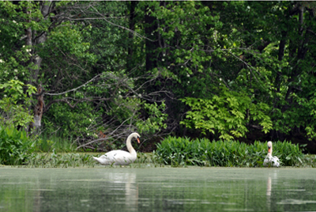

2012 Nature Paddling Tours
Our tours are kept small so we maximize our enjoyment and minimize our impact on the environment. Prices include the use of our boats, paddles, and personal flotation devices. (You may use your own equipment if you prefer.) Our guides are naturalists as well as American Canoe Association certified instructors who are there to share their knowledge of the river and help you with your paddling, if you need it. Tours are geared for beginner/intermediate paddlers and are very relaxed with the objective of observing and enjoying the nature around us.

Tour Options
 |
Spring Birding by Canoe/Kayak
MAY 19, (8:00am- 11:00am)
Wanna know what bird says "Hip, hip, hip hooray boys! Spring is here!"? Come find out what the birds are all saying on a morning of canoeing and birding on the Squanacook River. The birds will all be back from their Southern haunts and singing away to attract mates. It's the weekend of the year for birding! Basic paddling and safety will be covered. Boats, paddles, and PDF's (personal floating devices) are included. Bring binoculars and field guides if you have them.
Trip difficulty: Easy, flat-water, 4 miles roundtrip.
Trip Leader:Bert Hogan
Cost: ($32pp-canoe, $52pp-kayak) REGISTRATION REQUIRED
|
 |
Full Moon Canoeing
JUNE 2, (7:30-10:30pm)
Set out by canoe at dusk. As the darkness approaches, watch the moon rise, following its ribbon of light as we paddle. Perhaps we'll catch a glimpse of an owl or a night hawk or a beaver. We'll stop for refreshments, looking out over the water, listening to the night sounds, enjoying this memorable experience together. Basic paddling and safety will be covered. Boats, paddles, and PFD's are included.
Trip difficulty: Easy, flat-water, 5 miles roundtrip.
Cost: ($37pp- canoes only. Refreshments included) REGISTRATION REQUIRED
|
 |
Morning Wildlife on the Nashua
JULY 7 (9am-noon)
A peaceful summer morning is a great time to experience the wildlife of the Nashua River. Enjoy a guided tour with one of our knowledgeable guide/naturalists. Sightings have included swans, muskrats, mink, herons, osprey, and many more. Of course there are no guarantees of what we will see, but having a guide who is very familiar with this area, we'll have a good chance and a lot of fun exploring! Basic paddling and safety will be covered. Boats, paddles, and PFD's are included.
Trip difficulty: Easy, flat-water, 4-5 miles roundtrip.
Cost: ($32pp-canoe, $52pp-kayak) REGISTRATION REQUIRED
|
 |
Family Paddling with Turtles
AUGUST 4, (10am-1pm)
Enjoy a leisurely guided tour along the river and into a pond area filled with turtles. Sightings have included painted turtles, snapping turtles, musk turtles, and other wildlife. Our experienced guide/naturalists are very familiar with this area and enjoy sharing their knowledge of its recent animal activity. A light snack and some tools to enhance our learning will be provided. We'll stop along the river for a lunch break. Basic paddling and safety will be covered. Boats, paddles, and PFD's are included.
Trip difficulty: Easy, flat water, 3 miles roundtrip, ALL AGES.
Cost: ($64 per canoe- canoes only. All ages. Box lunch available for an additional cost or pack your own) REGISTRATION REQUIRED
|
|
Full Moon Canoeing
SEPTEMBER 29, (7:00-10:00pm)
Set out by canoe at dusk. As the darkness approaches, watch the moon rise, following its ribbon of light as we paddle. Perhaps we'll catch a glimpse of an owl or a night hawk or a beaver. We'll stop for refreshments, looking out over the water, listening to the night sounds, enjoying this memorable experience together. Basic paddling and safety will be covered. Boats, paddles, and PFD's are included.
Trip difficulty: Easy, flat-water, 5 miles roundtrip.
Cost: ($37pp- canoes only. Refreshments included) REGISTRATION REQUIRED
|
 |
Fall Foliage Paddle
OCTOBER 13, (11am-2pm)
The Squannacook River is the gem of the Nashua River Watershed. Its narrow, twisting passage meanders through areas of lily ponds and woodlands. The reflections of autumn foliage enhance the special beauty of this river.
Trip difficulty: Easy, flat-water, 4 miles roundtrip.
Cost: ($32pp-canoe, $52pp-kayak. All ages. Box lunch available for an additional cost or pack your own) REGISTRATION REQUIRED
|

Birthday Parties!
A birthday party on the river is fun for any age! Choose an activity option that will make a great birthday celebration suited just for you. If you'd like some active fun we have loads of paddling games up our sleeves. If you like exploring, consider a scavenger hunt or an adventure on a seldom-paddled section of the river. If you're an artist or enjoy crafts, we have several choices for you. If you'd like one of our nature tours customized for your group, let us know! Birthday cake is optional or bring your own. Call us
for details!
Custom Guided Tours
Families, friends, companies, clubs, groups, youth groups! If you have at least 5 boats, we'll arrange a special guided tour for you on the Nashua or Squannacook Rivers. Choose from one of the nature tours listed above or we'll customize something for your group. Call us
for details!
We have some interesting group rental options if you prefer to head out on your own.

Nashoba Paddler, LLC
978-448-8699
diane@nashobapaddler.com
LOCATION: 398 West Main St. (Rt. 225), Groton, Ma
MAILING ADDRESS: PO Box 228, West Groton, Ma 01472
All rights reserved, Nashoba Paddler, LLC 2012 ©